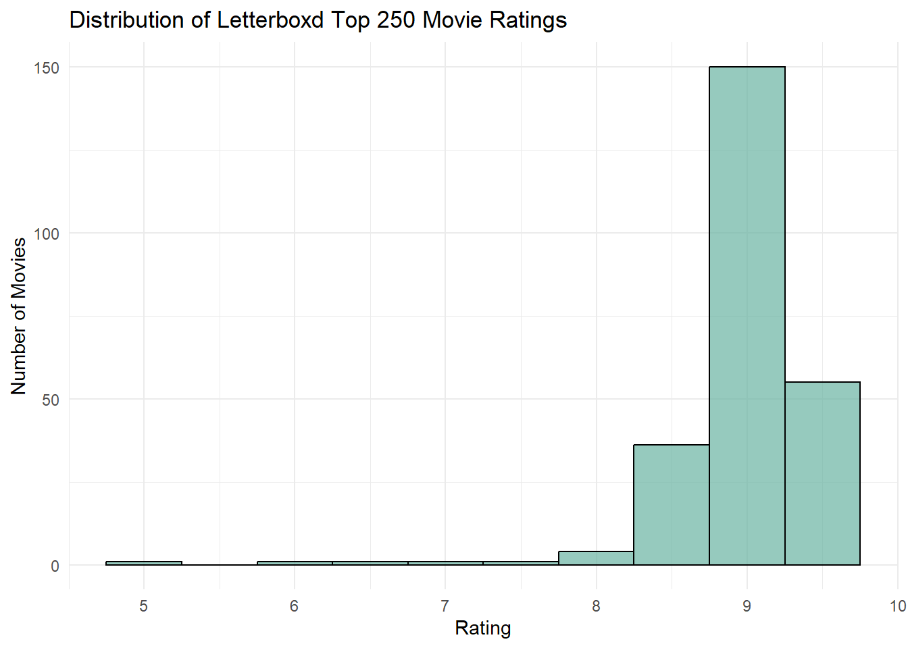
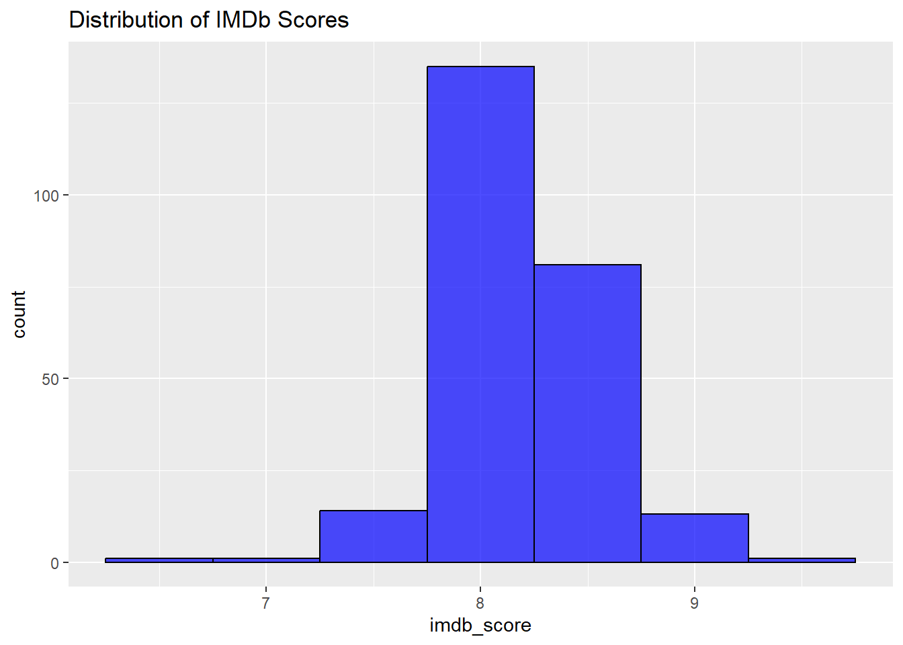
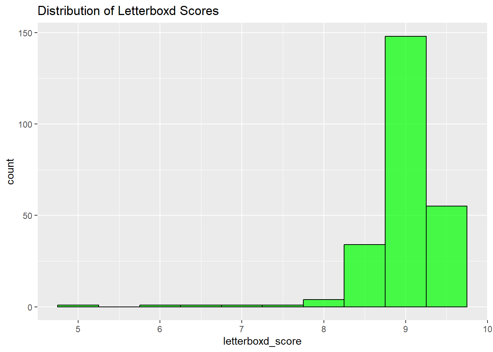
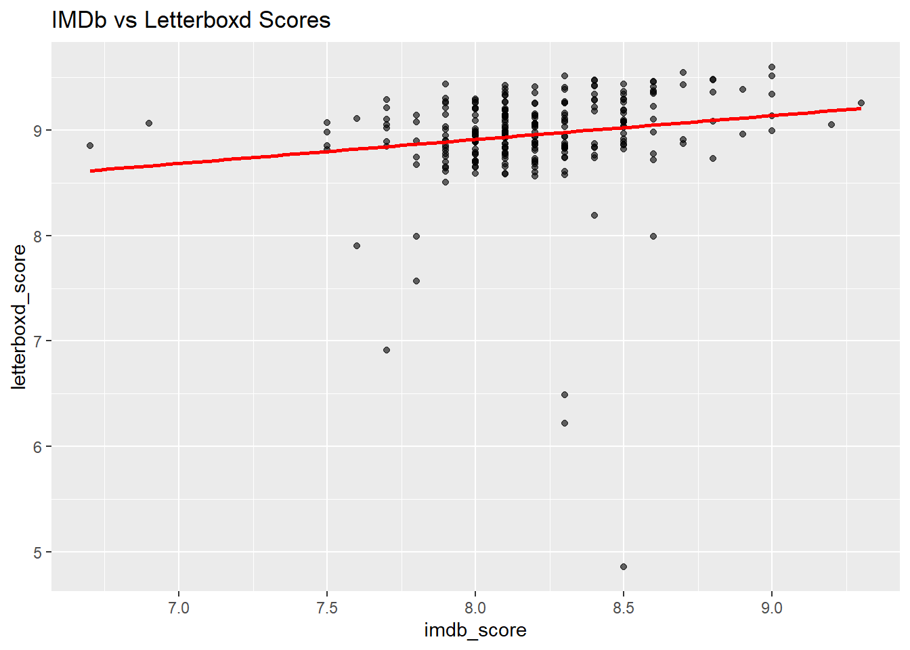
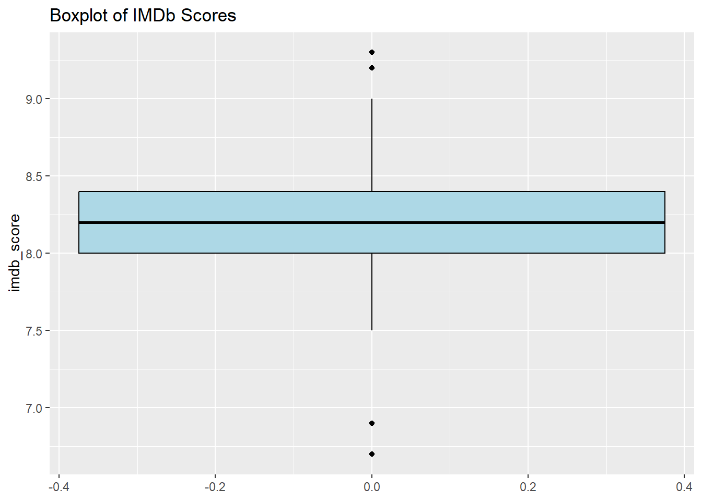
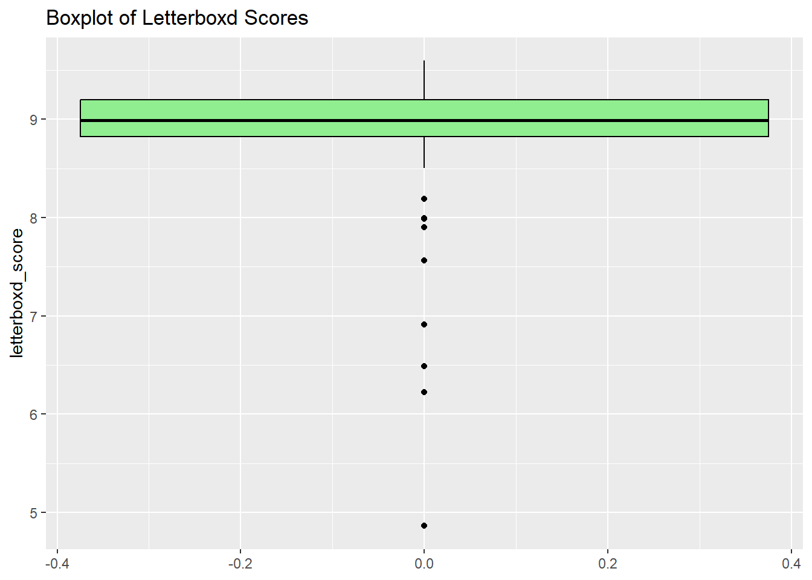

Julia’s EDA
Exploring the IMDb Data
Research Questions:
-
What are the top 10 highest rated movies?
# A tibble: 10 × 2 Title Rating <chr> <dbl> 1 El árbol de la horca 10 2 Mayamma 10 3 Kaputol 10 4 Rainy in Glenageary 10 5 It's a Love Thang 10 6 Olu Bliss: Dive In 10 7 Tetonica Castro: Home 10 8 Ixel 10 9 Nuriya: Tanita 10 10 Pandemania 10 -
What are the bottom 10 lowest rated movies?
# A tibble: 10 × 2 Title Rating <chr> <dbl> 1 Husaren heraus 1 2 Steckler Interviews 1 3 Soldier Comrades 1 4 The Case He Couldn't Crack 1 5 Reality 1 6 Weavers of Fortune 1 7 Das Gesetz der Wüste 1 8 Das verschwundene Haus 1 9 Zirkus Renz 1 10 Der Abenteurer 1 -
What is the distribution of scores like (how many films for each score?)?
Exploring the Letterboxd Data
Code
# use cleaning steps from letterboxdCleaning.qmd:
# import relevant packages
library(tidyverse)
# import data
letterboxd_data <- read_csv(here("data", "letterboxd_250movie_reviews.csv"))
letterboxd_convertStars <-letterboxd_data |>
mutate(numerical_rating = fct_recode(Rating, "5" = "★★★★★",
"4.5" = "★★★★½",
"4" = "★★★★",
"3.5" = "★★★½",
"3" = "★★★",
"2.5" = "★★½",
"2" = "★★",
"1.5" = "★½",
"1" = "★",
".5" = "½"))
letterboxd_clean <- letterboxd_convertStars |>
filter(!is.na(numerical_rating)) |>
mutate(
numerical_rating = as.numeric(as.character(numerical_rating)),
out_of_ten = numerical_rating *2) |>
group_by(Movie) |>
summarise(
avg_rating = mean(out_of_ten, na.rm = TRUE),
) |>
arrange(desc(avg_rating))Research Questions:
-
What are the top 10 highest rated movies?
Code
# A tibble: 10 × 2 Movie avg_rating <chr> <dbl> 1 12-angry-men 9.60 2 the-empire-strikes-back 9.54 3 singin-in-the-rain 9.51 4 the-lord-of-the-rings-the-return-of-the-king 9.51 5 the-good-the-bad-and-the-ugly 9.48 6 inglourious-basterds 9.48 7 the-human-condition-iii-a-soldiers-prayer 9.47 8 spider-man-into-the-spider-verse 9.47 9 its-a-wonderful-life 9.46 10 terminator-2-judgment-day 9.45 -
What are the bottom 10 lowest rated movies (of the top 250)?
Code
# A tibble: 10 × 2 Movie avg_rating <chr> <dbl> 1 parasite 4.86 2 war-and-peace 6.22 3 heat 6.49 4 eureka 6.91 5 monster 7.56 6 marcel-the-shell-with-shoes-on 7.9 7 everything-everywhere-all-at-once 7.99 8 life-is-beautiful 7.99 9 the-lives-of-others 8.19 10 8-half 8.49 -
What is the distribution of scores like (how many films for each score?)?
Code
letterboxd_clean %>% ggplot(aes(x = avg_rating)) + geom_histogram(binwidth = 0.5, fill = "#69b3a2", color = "black", alpha = 0.7) + labs( title = "Distribution of Letterboxd Top 250 Movie Ratings", x = "Rating", y = "Number of Movies" ) + theme_minimal() + scale_x_continuous(breaks = seq(0, 10, 1)) # Adjust x-axis breaks
Exploring the Merged Data
Exploring the data:
# A tibble: 6 × 3
Title letterboxd_score imdb_score
<chr> <dbl> <dbl>
1 12angrymen 9.60 9
2 2001aspaceodyssey 9.27 8.3
3 4months3weeksand2days 8.78 7.9
4 abrightersummerday 9.26 8.2
5 amanescaped 8.86 8.2
6 amatteroflifeanddeath 8.94 8 tibble [246 × 3] (S3: tbl_df/tbl/data.frame)
$ Title : chr [1:246] "12angrymen" "2001aspaceodyssey" "4months3weeksand2days" "abrightersummerday" ...
$ letterboxd_score: num [1:246] 9.6 9.27 8.78 9.26 8.86 ...
$ imdb_score : num [1:246] 9 8.3 7.9 8.2 8.2 8 8.3 8.1 8 8.1 ... Title letterboxd_score imdb_score
Length:246 Min. :4.863 Min. :6.700
Class :character 1st Qu.:8.826 1st Qu.:8.000
Mode :character Median :8.991 Median :8.200
Mean :8.955 Mean :8.196
3rd Qu.:9.200 3rd Qu.:8.400
Max. :9.597 Max. :9.300 Code

Code

Code

Code

Code
